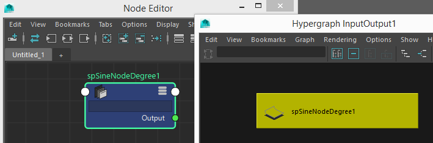
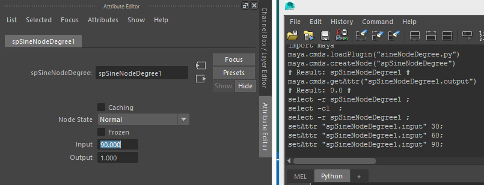

要学习maya node, 例如的attribute, plug, 怎么连接, 怎么计算等. 所以找了些资料来看, 这里记录一下.
例子 建一个算sin函数的node
这例子是http://me.autodesk.jp/wam/maya/docs/Maya2009/API/sine_node_8py-example.html这里找到的, 算是能找到的最简单明了的了. 我把单位从原来的radian改为了degree, 加了comments.
sineNodeDegree.py
下载这个py文件放到目录 里面, Windows > Plugin-in Manager to load that script.
然后就打开Node Editor or Hypergraph: Connection window就可以看到这个node了,

在Node Editor里面click to select this node, 就看到Attribute Editor是这样子:

尝试在input那边输入例如0 30 60 90等, output会立刻输出sin结果, 在script editor中也有输出.
Best Practices for MPxNode::compute() func, from book [Maya Python for Games and Film, 2011], only use MDataBlock object associated with the node. Trying to retrieve data from outside the data block may trigger unnecessary DG computation, or result in an infinite loop.